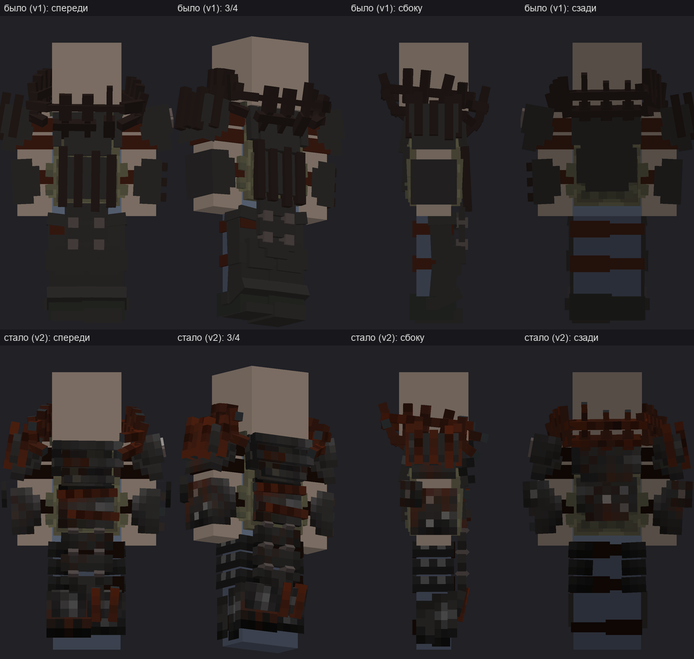
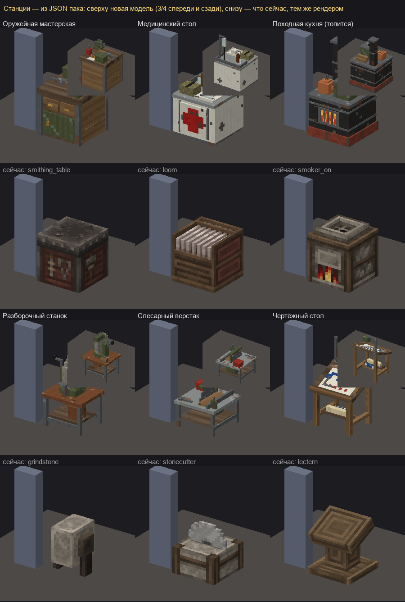
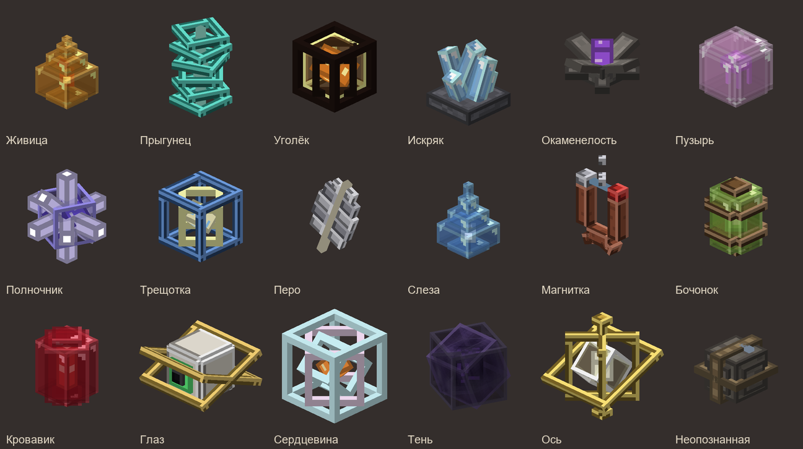

Что изменилось в Темнопустоши после прошлой сводки. Перед заходом перезапусти игру через лаунчер, чтобы загрузить новые модели и анимации.
Поступки остаются за персонажем
Поднять лежачего, перевязать раненого, дать воды или еды — всё это прибавляет человечность. За ограбление лежачего, вскрытие чужого схрона, каннибализм и убийство того, у кого человечность выше твоей, она падает. При отрицательном счёте прибавки за помощь уменьшаются вдвое. После смерти персонажа счёт обнуляется.
При −500 в списке игроков появляется повязка, при −1000 — череп. После поступка и при входе над панелью предметов видно, сколько очков осталось до снятия знака. Жители поселений встречают ходоков со знаком настороженно.
На оружие и патроны действует скидка 35%. У бандитских торговцев её получает ходок с повязкой или черепом. В поселениях и караванах нужны человечность от +500 и репутация поселений от +300.
Раненого теперь можно накормить консервами, пайком или готовым блюдом. Он увидит, что ему дают. Состояние еды сказывается на том, кто её съел.
Броня и ближний бой
У бронника появились «Плитник» с подсумками, сумка через плечо и тяжёлый «Плитник» из трёх частей. Нагрудник, поножи и ботинки делаются отдельно.

Нагрудник тяжёлого «Плитника» до и после переделки. Превью модели.
Мачете, монтировкой и другим подходящим оружием можно блокировать удары на ПКМ. Shift+ЛКМ толкает противника, Shift+Q бросает предмет. Добавили кувалду и двуручный молот. В третьем лице видны двуручный хват и анимация удара.
У замаха появилась дуга, у попадания в голову свой звук. Кровь у людей и мутантов различается по цвету. Бег и жёсткое приземление поднимают пыль. После долгого бега слышно дыхание, а при раздробленной ноге слышна хромота.
На столе теперь видно работу
У станков новые модели. Во время крафта ингредиенты лежат на столе, инструмент бьёт в такт звуку, а готовая вещь появляется плавно. На нескольких станциях об окончании работы сообщают звук и частицы.

Новые станки рядом со старыми. Превью моделей.
Оружейный чертёж теперь состоит из узлов. Начертил общий узел один раз, и он засчитывается для всех подходящих стволов. Мастер, образец оружия в сумке и фонарь рядом со столом повышают шанс. При неудаче уходит бумага, детали остаются. Образец всё ещё можно разобрать и открыть весь чертёж сразу. Со смертью изученные чертежи и узлы сгорают.
На вылазке
Механики делают верёвку с крюком, её также можно купить. Наведи её на край твёрдого блока выше себя и нажми ПКМ. Крюк поднимает на площадку до 10 блоков выше и расходуется при удачном подъёме. Если зацепиться не удалось, попробуй с другой точки.
Для ходоков, потерявших ногу, добавили доску на колёсах. Автоматы с убитых противников теперь стоит искать у солдат Нулевого ветра.
Диковин стало 17, у них появились редкость и объёмные модели. Часть находок попадается неопознанной. Чтобы разобрать находку, используй Shift+ПКМ. Есть риск потерять её при опознании. Опознанные диковины берут Жук, Ворон и Вёсла.

Диковины из обновления. Превью моделей.
В поселениях и у костра
В меню ходока «Каморка отряда» видно этап своей каморки, назначенную осаду и ближайшие свободные комнаты. Кнопка «Путь» на минуту подсвечивает дорогу. Отряд получает предупреждение о взломе и начале осады. У каморок появились свои модели мебели.
Песня из радиоприёмника стихает по мере удаления. Если отойти ненадолго и вернуться, она продолжит играть. Громкость радио в КПК настраивается отдельно, для эфира есть передатчик.
У трактирщика появились орлянка и «Семь» со ставками от 1 до 20 шайб. В «Семи» угадывают, будет ли сумма двух костей меньше семи, больше или ровно семь. Правила и выплата видны до подтверждения ставки.
Починили торговлю при отключённом учёте складов, одновременную работу хозяина и покупателей с прилавком, а также обыск на краю высоты мира. Сохранения рынка, отрядов и других систем теперь читаются из резервной копии при повреждении основного файла.